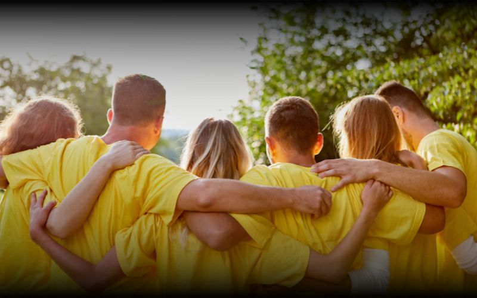

La définition qu'on ne vous donne jamais
Un team building, littéralement, c'est "construire une équipe". Mais dans la réalité des entreprises, ce terme recouvre des réalités très différentes : le karting un peu forcé, le séminaire qui ressemble à une réunion déguisée, ou au contraire l'expérience collective qui reste gravée pendant des années.
La vraie définition d'un bon team building, c'est celle-ci : une activité qui crée des souvenirs partagés, révèle les individus sous un angle différent, et renforce durablement le lien entre collègues. Trois critères. Si votre activité coche les trois, c'est un bon team building.
La question à se poser avant de réserver : "Est-ce que dans 6 mois, mes collaborateurs vont encore en parler ?" Si la réponse est non, cherchez autre chose !
Les 4 ingrédients d'un team building réussi
1. Un objectif clair, mais pas trop affiché
Chaque team building doit répondre à un besoin précis : souder une équipe qui vient de grossir rapidement, créer du lien après des mois de télétravail, remotiver après une période intense, intégrer de nouvelles recrues. C'est à vous de choisir cet objectif en amont.
Mais attention : ne le mettez pas trop en avant le jour J. Les meilleurs résultats arrivent quand les participants se laissent porter par l'expérience sans avoir l'impression d'être dans un "exercice de cohésion". L'objectif guide la sélection de l'activité, pas le discours du manager.
2. Une activité qui met tout le monde sur le même pied
C'est le critère le plus sous-estimé. Un bon team building est celui où le directeur et le stagiaire sont sur un pied d'égalité. Où les compétences professionnelles ne donnent aucun avantage. Où quelqu'un d'habituellement discret peut briller.
C'est pourquoi les activités créatives, culinaires, ou sportives non-compétitives fonctionnent si bien : elles redistribuent les cartes. Un atelier poterie ou un escape game ne favorisent ni le plus expérimenté ni le plus gradé.
3. Un moment de partage, pas une performance
L'erreur classique : transformer le team building en compétition individuelle. Résultat : certains gagnent, d'autres perdent, et les perdants rentrent à la maison avec un sentiment négatif. Un bon team building met en valeur la collectif, pas les individus.
La compétition entre équipes est saine et motivante. La pression sur les individus est contre-productive. Nuance subtile mais cruciale dans la sélection du format.
4. Un débrief, même court
C'est la partie la plus souvent négligée, et pourtant la plus importante pour transférer l'expérience dans le quotidien professionnel. Même 15 minutes de débrief collectif après l'activité permettent de verbaliser ce qui s'est passé, de nommer les comportements observés, de faire le lien avec les enjeux du travail réel.
Sans débrief, le team building reste un bon souvenir. Avec un débrief, il devient un apprentissage.

Les formats qui marchent (et ceux qu'on évite)
✅ Ce qui fonctionne bien
- Les activités créatives, poterie, peinture, musique, street art. Tout le monde repart de zéro, personne n'est expert. Les barrières tombent naturellement.
- Les escape games et jeux de logique, révèlent les dynamiques d'équipe, créent de la complicité, accessibles à tous les profils.
- Les activités nature, randonnée, survie, outdoor. Le dépaysement est un puissant accélérateur de lien social.
- La gastronomie collaborative, cuisiner ensemble crée une intimité qui prend des mois à se construire en réunion.
- Les défis sportifs doux, pas de condition physique requise, focus sur l'entraide plutôt que la performance.
❌ Ce qu'on évite
- Les activités trop compétitives qui isolent les moins sportifs
- Les formats trop "corporate" qui ressemblent à une réunion déguisée
- Les activités imposées sans prise en compte des profils de l'équipe
- Le team building sans objectif défini, "on fait quelque chose ensemble" n'est pas un objectif
- Trop rare ou trop fréquent, la bonne cadence est 2 à 4 fois par an
Comment choisir selon votre situation
La situation de votre équipe doit guider votre choix plus que vos préférences personnelles :
- Équipe qui vient de grossir rapidement → privilégiez les formats d'intégration (escape game, atelier créatif, randonnée)
- Équipe sous forte pression → misez sur le ressourcement (nature, bien-être, slow)
- Équipe qui manque de communication → choisissez des formats qui forcent la coopération verbale (jeux de construction, cuisine)
- Équipe multiculturelle ou internationale → activités non-verbales ou sensorielles (sport, gastronomie, art)
- Équipe tech ou créative → formats innovants (réalité virtuelle, escape game, serious games)
Notre conseil : impliquez 1 ou 2 collaborateurs dans le choix de l'activité. Ça augmente l'adhésion de toute l'équipe, les gens s'approprient mieux ce qu'ils ont contribué à choisir.
Le vrai ROI d'un team building bien choisi
Le coût d'un team building oscille entre 30 et 150€ par personne selon le format. C'est un budget qui effraie parfois les directions. Pourtant, rapportez-le au coût d'un départ : entre 4 000 et 10 000€ selon le poste, sans compter le temps de recrutement et d'intégration.
Un collaborateur qui se sent appartenir à son équipe, qui a des liens authentiques avec ses collègues, est statistiquement 2 fois moins susceptible de quitter l'entreprise. Investir 80€ par personne et par trimestre pour construire cette appartenance, c'est l'un des meilleurs retours sur investissement RH qui soit.
Et puis, il y a ce qui ne se mesure pas : l'énergie d'une équipe qui se fait confiance, la fluidité des réunions quand on se connaît vraiment, et la fierté collective d'avoir vécu quelque chose ensemble.
Vous cherchez votre prochaine activité en Alsace ?
Filtrez par objectif, format, budget et ville pour trouver l'activité idéale pour votre équipe.
Explorer les activités →